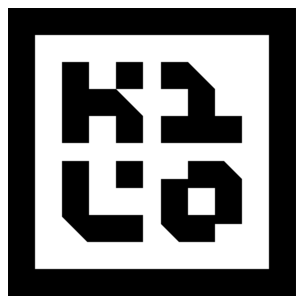

Live agents
Subagent task tree
Sessions click a column
header to sort · / search · r refresh ·
c chat
| Title | Agent | State | Tasks | Tools | Tokens | Updated | ID |
|---|
Session detail

Agent Manager| Title | Agent | State | Tasks | Tools | Tokens | Updated | ID |
|---|